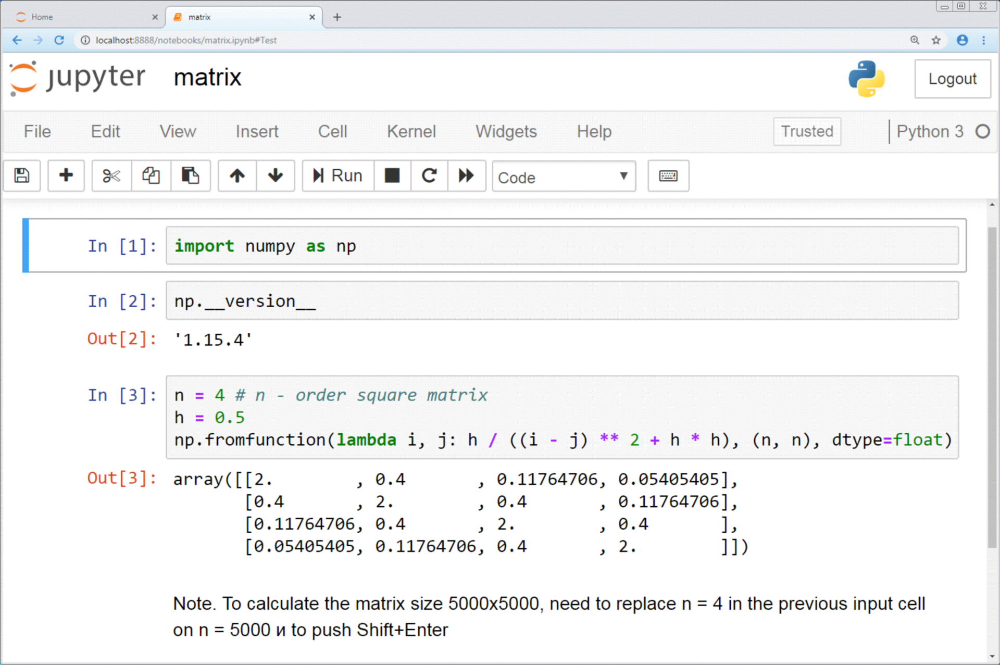

Del concepto a una experiencia reproducible
La primera unidad presentó una cadena que conecta registro, dato contextualizado, evidencia, interpretación, decisión y acción. El laboratorio permite recorrer esa cadena sobre una fuente concreta. El objetivo técnico consiste en ejecutar un notebook preparado; el trabajo de aprendizaje consiste en controlar qué archivo ingresa, qué representa cada fila y qué significado puede asignarse a la salida.
La reproducibilidad comienza antes del cálculo. Dos personas pueden ejecutar el mismo código y obtener resultados diferentes cuando utilizan archivos, períodos o filtros distintos. Por eso el Paquete A identifica el release, conserva un diccionario y establece resultados de control. La versión 1.0 contiene 900 filas, 15 columnas, 426 pedidos, 72 clientes y 18 productos. Estos valores permiten comprobar que la carga terminó correctamente.
Una práctica reproducible deja una traza mínima:
pregunta → archivo y versión → grano → transformación → control → resultado → interpretación → límiteCada componente responde una pregunta verificable. El archivo y la versión identifican la fuente. El grano fija la unidad observada. La transformación describe qué hizo el notebook. El control compara la salida con una referencia. La interpretación vincula el resultado con una decisión. El límite declara qué información falta.
Primer encuentro con un notebook, Colab y Python
Un notebook de Jupyter es un documento que intercala explicaciones, instrucciones ejecutables y los resultados producidos por esas instrucciones. Su extensión habitual es .ipynb. A diferencia de un archivo de texto común, el notebook permite leer una idea y probarla en el mismo lugar: una celda describe qué se hará, la siguiente contiene el código y debajo aparece una tabla, un número, un gráfico o un mensaje de control.
Qué conserva el notebook y qué conserva la sesión de Colab
Pregunta de lectura¿Qué permanece guardado y qué debe reconstruirse después de reiniciar la sesión?
ARCHIVO .IPYNB · PERSISTE CUANDO SE GUARDA
Celda de texto
Explica la pregunta, la fuente y el control esperado.
Celda de código
Conserva instrucciones y su orden de lectura.
import pandas as pdruta = 'ventas_inicial.csv'Salida guardada
Puede conservar una tabla o mensaje, aunque conviene volver a ejecutar.
SESIÓN DE COLAB · EXISTE MIENTRAS ESTÁ ACTIVA
Memoria
pd y ruta son nombres disponibles después de ejecutar sus celdas.
Lectura del archivo
La sesión busca el CSV temporal y crea un DataFrame.
ventas = pd.read_csv(ruta)Reinicio
Se borran variables y /content; hay que cargar el archivo y ejecutar de nuevo.
El archivo organiza la explicación y las instrucciones. La sesión ejecuta esas instrucciones, mantiene variables en memoria y conserva archivos temporales hasta que el entorno se reinicia.
- 01
El archivo .ipynb guarda celdas, orden, metadatos y las salidas que se hayan guardado.
- 02
La sesión importa la librería, crea la variable ruta y ejecuta el método read_csv.
- 03
pd.read_csv(ruta) usa pd como alias, read_csv como función de la librería y ruta como argumento.
- 04
Al reiniciar se pierden memoria y archivos temporales; el notebook permite repetir el recorrido.

Google Colab ofrece una forma de abrir y ejecutar notebooks desde el navegador. Está basado en Jupyter y evita instalar Python o configurar un entorno local para esta primera experiencia. El Paquete A ya contiene el código necesario. El trabajo inicial consiste en reconocer las partes del documento, ejecutarlas en el orden indicado, observar qué salida produce cada paso y modificar únicamente los valores señalados.
Esta aproximación permite concentrarse en el significado del análisis. Durante la práctica aparecerán instrucciones de Python, pero todavía no se espera que el estudiante escriba un programa desde cero. La unidad dedicada a Python y Pandas retomará la sintaxis con mayor profundidad. Aquí construiremos el vocabulario mínimo para leer el notebook sin tratar el código como una caja cerrada.
El documento y la sesión de ejecución son cosas distintas
El notebook es el archivo que conserva las celdas de texto, el código escrito y, según la configuración, algunas salidas guardadas. La sesión de ejecución es la computadora virtual temporal que Colab conecta al documento para ejecutar el código. Esa sesión recuerda variables, funciones y archivos cargados mientras permanece activa.
La diferencia se vuelve visible después de una desconexión. El notebook puede seguir mostrando una tabla generada anteriormente, aunque la nueva sesión todavía no haya cargado el archivo que la produjo. Para reconstruir un resultado confiable conviene ejecutar las celdas desde el comienzo. Los archivos temporales también pueden desaparecer al reiniciarse la sesión; por eso el ZIP original y una copia del notebook deben conservarse fuera de ese entorno temporal.
Celdas de texto, celdas de código y salidas
Las celdas de texto presentan títulos, explicaciones, consignas y preguntas de control. Se leen como los párrafos de este sitio. Las celdas de código contienen instrucciones para Python. A la izquierda muestran un botón de ejecución. Cuando una celda de código termina, su salida aparece debajo y queda asociada visualmente con la instrucción que la generó.
Una salida puede ser un número, un mensaje, una tabla o un gráfico. También puede no aparecer nada. Algunas celdas preparan herramientas para utilizar más adelante y terminan correctamente sin mostrar un resultado visible. El indicador de ejecución y la ausencia de un mensaje de error permiten distinguir esa situación de una falla.
Para ejecutar una celda se puede utilizar el botón triangular, similar al ícono Play de un reproductor de música o video. La combinación Shift + Enter también ejecuta la celda seleccionada y avanza a la siguiente. La primera ejecución puede demorar mientras Colab conecta la sesión; volver a presionar el botón no acelera esa conexión, por lo que conviene observar el indicador y esperar a que termine.
Cada nueva activación vuelve a ejecutar las instrucciones. Una operación es idempotente cuando repetirla deja el mismo estado, como asignar otra vez DIMENSION = "familia". Otras operaciones acumulan efectos: contador += 1 aumenta el valor en cada ejecución, agregar una fila puede duplicarla y enviar una solicitud puede registrar dos veces la misma acción. Antes de repetir una celda, conviene reconocer si reconstruye un resultado desde la misma fuente o modifica algo que ya existe.
El orden de ejecución forma parte del resultado
Python recuerda lo que ya se ejecutó durante la sesión. Una celda puede utilizar un nombre definido varias celdas antes. El siguiente ejemplo prepara un valor:
DIMENSION = "familia"Otra celda puede utilizarlo después:
print("El resumen se calculará por", DIMENSION)La segunda celda funciona cuando la primera ya fue ejecutada. Si la sesión se reinició o las celdas se ejecutaron fuera de orden, Python puede informar que DIMENSION no existe. Cambiar el texto "familia" por "region" tampoco actualiza las salidas anteriores de manera automática. Después de editar una celda hay que volver a ejecutarla y repetir las celdas posteriores que dependen de ese valor.
La regla de trabajo será simple: comenzar arriba, avanzar en orden y detenerse a observar cada control. Si aparece un resultado extraño, se revisa primero el último cambio y luego se reconstruye la ejecución desde una celda conocida.
Variables: nombres que permiten reutilizar valores
Una variable es un nombre asociado con un valor que Python podrá utilizar más adelante. En una asignación, el signo = puede leerse como “guardar el valor de la derecha con el nombre de la izquierda”.
ARCHIVO = "ventas_inicial.csv"
FILAS_ESPERADAS = 900
DIMENSION = "familia"ARCHIVO, FILAS_ESPERADAS y DIMENSION son nombres elegidos para que el código pueda leerse. Los textos se escriben entre comillas; los números utilizados para calcular se escriben sin ellas. "900" representa texto, mientras que 900 representa un número entero. Durante esta práctica se modificarán valores como "familia", pero se conservarán el nombre de la variable, el signo igual y las comillas.
Una variable puede cambiar cuando se ejecuta una nueva asignación. Esa posibilidad permite adaptar el mismo bloque de análisis sin reescribirlo. También explica por qué el orden importa: el valor vigente es el último que la sesión recibió.
Funciones: acciones preparadas para volver a usarse
Una función reúne una tarea bajo un nombre. Se reconoce porque el nombre aparece seguido de paréntesis. Lo que se escribe entre esos paréntesis es la información que la función necesita para trabajar.
print("Archivo cargado")
round(15.678, 2)
len(tabla)print muestra información, round redondea un número y len cuenta elementos. En round(15.678, 2), la coma separa el número que será redondeado de la cantidad de decimales solicitada.
El notebook también puede contener una celda que comienza con def. Esa palabra prepara una función propia para utilizarla después:
def calcular_venta_neta(cantidad, precio, descuento):
return cantidad * precio * (1 - descuento)Ejecutar esta definición deja la función disponible y puede no mostrar nada. Otra celda la utiliza al escribir calcular_venta_neta(...). Las líneas desplazadas hacia la derecha pertenecen a la función; esos espacios forman parte de la sintaxis y deben conservarse. En este laboratorio alcanza con reconocer la definición, ejecutarla y comprender qué información recibe. La escritura autónoma de funciones se retomará más adelante.
Librerías: colecciones de herramientas ya construidas
Python incluye funciones básicas y puede incorporar otras mediante librerías. Una librería reúne código preparado para un tipo de trabajo. La primera celda del notebook utiliza una instrucción frecuente:
import pandas as pdpandas es la librería que utilizaremos para trabajar con tablas. La expresión as pd asigna una abreviatura convencional. Por eso las instrucciones posteriores comienzan con pd., como en pd.read_csv(...). La celda de importación debe ejecutarse antes de utilizar la librería y, en esta práctica, no necesita modificaciones.
La siguiente instrucción lee el archivo CSV y guarda la tabla en una variable:
ventas = pd.read_csv("ventas_inicial.csv")read_csv puede leerse como “leer un archivo CSV”. El punto indica que esa herramienta pertenece a Pandas. El resultado se guarda con el nombre ventas. Pandas representa la tabla mediante un objeto llamado DataFrame: una estructura con filas y columnas que permite seleccionar, ordenar, agrupar y calcular sin modificar el archivo original.
Comentarios y símbolos que ayudan a leer
El signo # inicia un comentario destinado a la persona que lee el código. Python ignora el resto de esa línea. En el Paquete A, los comentarios indican qué valor puede cambiarse y qué control debe observarse.
# Cambiar solamente el texto entre comillas
DIMENSION = "familia"No hace falta memorizar toda la sintaxis. Alcanza con reconocer los signos que aparecen en las celdas y evitar borrarlos cuando la consigna solicita un cambio pequeño.
| Elemento | Lectura inicial |
|---|---|
= | guarda un valor con un nombre |
"texto" | representa un valor de texto |
( ) | contiene la información entregada a una función |
, | separa valores dentro de una función |
. | accede a una herramienta de una librería u objeto |
[ ] | suele expresar una colección o una selección |
: | abre un bloque de código |
| sangría | indica qué líneas pertenecen al bloque |
# | introduce un comentario para quien lee |
Los errores ofrecen información para diagnosticar
Un mensaje de error indica que Python no pudo completar una instrucción. El notebook no queda destruido por esa situación. Para diagnosticarla conviene conservar el mensaje completo, identificar la celda y revisar el último cambio. Entre las causas iniciales más frecuentes aparecen una comilla o un paréntesis borrados, una celda anterior sin ejecutar, un nombre escrito de otra manera o un archivo que todavía no fue cargado.
Si la causa no resulta visible, se vuelve a ejecutar el notebook desde el comienzo y se observa en qué celda aparece la primera diferencia. Pedir ayuda mostrando el mensaje completo permite ubicar el problema con mucha más precisión que decir únicamente que “no funciona”. Esta misma disciplina se utilizará después para investigar diferencias en SQL, transformaciones y reportes.
La primera carga funciona como prueba de orientación
La celda de carga recibe ventas_inicial.csv y construye el DataFrame ventas en memoria. La salida esperada informa 900 filas × 15 columnas. Ese valor confirma que el archivo, la versión y el separador coinciden con la práctica preparada. Una forma diferente puede indicar que se cargó otro archivo, que la lectura quedó incompleta o que el esquema cambió.
El primer objetivo consiste en poder explicar cuatro cosas con palabras sencillas: qué celda carga el archivo, en qué variable queda la tabla, qué salida confirma la carga y qué debería revisarse si el control difiere. Esta lectura prepara el trabajo posterior con el diccionario, el grano y las métricas.
El diccionario precede al cálculo
Un diccionario de datos describe el significado, tipo y uso de cada campo. La tabla inicial incluye identificadores, dimensiones, fechas y medidas. Esta clasificación ayuda a anticipar qué operaciones tienen sentido.
| Clase de campo | Función | Ejemplo del Paquete A |
|---|---|---|
| Identificador | distingue una entidad o registro | pedido, cliente_id, producto_id |
| Dimensión | permite segmentar o describir | familia, region, canal |
| Fecha | ubica un hecho en el tiempo | fecha_pedido, fecha_entrega |
| Medida | admite una operación cuantitativa | cantidad, precio_unitario, costo_unitario |
| Estado | representa una condición del proceso | estado_entrega |
El tipo físico y el significado de negocio trabajan juntos. Una fecha almacenada como texto requiere conversión antes de ordenar períodos. Un identificador numérico conserva función nominal; calcular su promedio carece de sentido. Una dimensión permite agrupar, mientras que una medida permite sumar o calcular ratios según su definición.
Grano: qué representa una fila
El grano del Paquete A es una línea de pedido. Cada fila representa un producto incluido en una orden. Un pedido puede contener varios productos y, por esa razón, su identificador aparece repetido.
| pedido | producto | cantidad |
|---|---|---|
| FS-2025-0328 | Motor eléctrico 10 HP | 18 |
| FS-2025-0328 | Rodamiento industrial 6208 | 21 |
| FS-2025-0134 | Bomba centrífuga FS-A120 | 2 |
Las dos primeras filas describen productos distintos de un mismo pedido. Contar filas responde cuántas líneas existen. Contar pedidos distintos responde cuántas órdenes aparecen. La diferencia entre 900 líneas y 426 pedidos muestra por qué cada métrica necesita declarar el grano.
El grano también limita la evidencia. La tabla permite calcular ventas y margen por producto, familia o región. Una explicación sobre la causa de una demora necesita información sobre disponibilidad, depósito, transportista o capacidad. La ausencia de esas columnas debe aparecer en la interpretación.
Controles de entrada y de proceso
Un control compara el estado observado con una expectativa. El primer control utiliza forma, campos y versión. Luego pueden revisarse nulos, duplicados y reglas básicas. El release inicial mantiene la dificultad técnica acotada y presenta datos limpios, pero el hábito de control comienza aquí.
Del archivo CSV a una métrica controlada

Cada control responde una pregunta distinta sobre el archivo. Los registros que no cumplen una regla permanecen visibles y se revisan antes de interpretar la métrica.
- 01
La forma del archivo confirma filas, columnas y encabezados.
- 02
El diccionario establece qué significa cada campo.
- 03
Los faltantes y valores imposibles reciben un tratamiento explícito.
- 04
La reconciliación compara la salida con un total conocido.
| Control | Resultado esperado | Riesgo que detecta |
|---|---|---|
| cantidad de filas | 900 | archivo parcial o equivocado |
| cantidad de columnas | 15 | cambio de esquema |
| pedidos distintos | 426 | alteración de la fuente |
| combinación pedido-producto repetida | 0 | duplicación de líneas |
| campos requeridos ausentes | 0 | carga incompleta |
Una salida que coincide con estos valores queda habilitada para la práctica. El control demuestra consistencia con el release; la interpretación todavía requiere revisar fórmulas y significado.
Reproducir una métrica preparada
El notebook calcula resultados a partir de columnas documentadas. La venta neta surge de cantidad, precio y descuento. El margen bruto compara esa venta con el costo asociado. La tasa de entrega a tiempo utiliza las fechas y reglas incluidas en el release.
Una métrica agregada necesita declarar numerador, denominador y población. El margen porcentual total se calcula como margen bruto total dividido por venta neta total. El promedio simple de porcentajes por fila asignaría el mismo peso a operaciones de tamaños diferentes. La ficha del KPI evita esa ambigüedad.
Adaptar una dimensión
La primera modificación cambia una sola variable:
DIMENSION = "region"El bloque de agregación permanece estable. El cambio permite observar cómo la misma métrica responde otra pregunta. El resumen por familia ayuda a estudiar mezcla de productos; el resumen por región permite comparar contextos comerciales y logísticos.
La adaptación exige interpretar la salida. Patagonia presenta una tasa de entrega a tiempo menor dentro del extracto. La tabla permite describir la diferencia. La explicación causal requiere incorporar datos sobre transporte, depósito, promesa o disponibilidad. Esa frontera convierte el dato faltante en parte de la evidencia.
Del resultado al canvas
El canvas decisión–métrica–acción organiza la transferencia. Quien realiza la práctica, de manera individual o en equipo, selecciona una tensión, identifica a la persona que puede actuar y escribe una decisión con alternativas. Después propone un KPI y vincula la definición con una fuente.
| Componente | Ejemplo Faro Sur |
|---|---|
| Tensión | Patagonia presenta menor cumplimiento de entrega |
| Audiencia | Gerencia de Operaciones |
| Decisión | revisar promesa o capacidad de despacho para la región |
| KPI | pedidos entregados a tiempo / pedidos entregados |
| Fuente disponible | líneas de pedido del Paquete A |
| Dato faltante | depósito de origen y transportista |
| Límite | el patrón observado carece de identificación causal |
La observación cita el resultado. La interpretación propone un significado compatible con el proceso. La decisión identifica una acción condicionada. El límite declara qué debería conocerse antes de comprometer una recomendación.
IA como objeto de verificación
Una asistencia de IA puede explicar código o proponer una lectura. La persona o el equipo conserva la instrucción, identifica la parte utilizada y la contrasta con el notebook. Una explicación sobre menor cumplimiento en Patagonia debe coincidir con la salida y respetar el grano. Una atribución directa a distancia o transporte excede la fuente disponible.
El control puede registrarse con cuatro campos:
- propuesta recibida;
- evidencia utilizada para comprobarla;
- corrección realizada;
- conclusión aceptada y su límite.
La privacidad se mantiene como regla operativa. El caso Faro Sur es sintético. Los trabajos con casos reales requieren autorización, anonimización y revisión de la información enviada a servicios externos.
Recuperación técnica y conceptual
El laboratorio reserva un tramo final para cerrar brechas. Un problema de acceso se diagnostica con el nombre del archivo, la celda y el mensaje de error. Una dificultad conceptual se trabaja con el diccionario, el grano y el resultado esperado. Esta separación evita que una falla de configuración se confunda con falta de comprensión.
La preparación para la unidad siguiente se observa en cinco evidencias:
| Evidencia | Pregunta de control |
|---|---|
| archivo identificado | ¿qué release se utilizó? |
| grano explicado | ¿qué representa una fila? |
| métrica ejecutada | ¿qué columnas y regla la producen? |
| resultado reconciliado | ¿con qué valor seguro se comparó? |
| decisión condicionada | ¿qué acción habilita y qué dato falta? |
El canvas corregido y la evidencia de salida quedan disponibles para trabajar arquitectura, roles y sistemas fuente. La siguiente unidad ampliará el recorrido hacia los componentes que producen y conservan esos datos.
Preguntas de comprobación
- ¿Por qué 900 filas pueden corresponder a 426 pedidos?
- ¿Qué diferencia existe entre una dimensión y una medida?
- ¿Qué control permite detectar que se cargó otro archivo?
- ¿Qué cambia al reemplazar
familiaporregion? - ¿Qué resultado pertenece a la observación y qué afirmación requiere otra fuente?
- ¿Cómo se documenta una explicación asistida por IA?
Alcance de la unidad
Esta instancia cubre navegación básica en Colab, lectura del diccionario, carga, grano, clasificación de campos, ejecución guiada, adaptación de una dimensión, control e interpretación. La escritura autónoma de Python, SQL, joins, infraestructura cloud y modelado relacional aparecen en unidades posteriores.